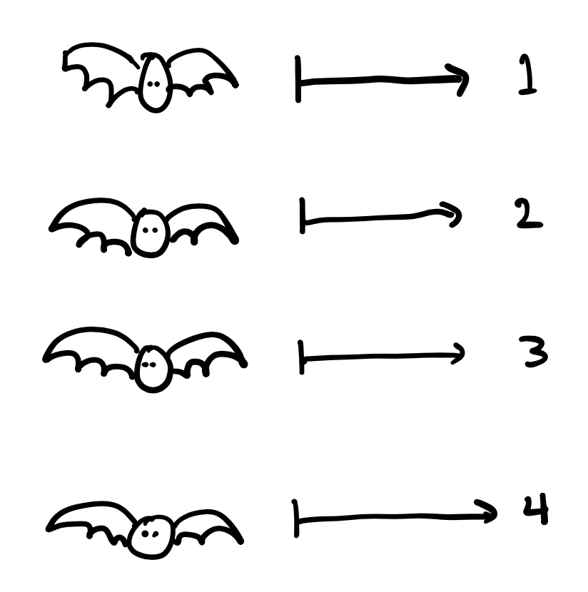

Our objective for this lecture is to develop a rigorous way to discuss sizes of sets. How can we tell if a set is finite or infinite? Are all infinite sets the same size? In order to do this, we first need to establish a mathematical framework for counting.
Author
Heather Zinn Brooks
Lecture Date
Wed 06 September 2023
Lecture videos
Sets and cardinality
If you want to learn how to count, I think I can point you to no better resource than The Count from Sesame Street:
What is The Count actually doing when he counts? He is assigning a number from the set we described last class, the natural numbers \(\mathbb{N}\), to each object. He is doing this in a systematic way, so that
Each element will be included, and
Each element is included only once.

In other words, he’s mapping the elements of his set (bats) to a subset of the natural numbers.
Definition 1 (Cardinality) Suppose \(J_n = \{1, 2, \dots, n\} \subset \mathbb{N}.\) Then, if \(A\) is in one-to-one correspondence with \(J_n\), then \(A\)cardinality\(n\) (equivalently \(A\) is size \(n\)). We denote this \[\vert A \vert = n.\]
If \(A\) contains no elements, then it is not in one-to-one correspondence with any subset of \(\mathbb{N}\); it is the empty set \(\emptyset\) and \(\vert A \vert = 0.\)
Example. Consider the set \(A = \{ 1, \Delta, \Pi, \square \}\). We can create a bijection between \(A\) and \(J_4\), as follows: \[\begin{align*}
1 &\mapsto 1 \\
\Delta &\mapsto 2 \\
\Pi &\mapsto 3 \\
\square &\mapsto 4 \,
\end{align*}\] Because we have created a bijection between our set and \(J_4\), we say that \(\vert A \vert = 4.\)
Unfortunately (or perhaps fortunately?), it is not possible to assign every set a natural number in this way.
Definition 2 (Finite and infinite) We say a set is finite is \(A\) is in one-to-one correspondence with \(J_n.\) Otherwise, we say \(A\) is infinite.
Countable sets
Definition 3 We say a set \(A\) is countable if \(A\) is in one-to-one correspondence with \(\mathbb{N}.\)
In-class activity
In class, we will consider some examples. The goal is either to construct a bijection, or prove that there is no bijection.
Theorem 1 Every infinite subset of a countable set is countable.
Proof. Suppose \(A\) is a countable set. Because \(A\) is countable, there is a bijection between \(A\) and \(\mathbb{N}\), and we can label the elements of \(A\) as a sequence indexed by \(\mathbb{N}\): \(A = \{x_1, x_2, \dots\}.\)
Now consider \(E \subset A.\) By the well-ordering property of \(\mathbb{N}\) there is an element of \(E\) with the smallest index. Call this index \(n_1.\) Proceeding in this manner, if we have labeled the \(k-1\) smallest indices as \(\{n_1, n_2, \dots, n_{k-1}\},\) then what remains unlabeled is still indexed by a subset of \(N\) and there is an element with the smallest index that we may call \(n_k.\)
To be more explicit about the notation here , we know that the elements of \(E\) are indexed by a subset of \(N\) that we have labeled \(\{n_1, n_2, ...\}\), so we can write \[ E = \{x_{n_1}, x_{n_2}, x_{n_3}, \dots \} \,. \]
This process creates the bijection \(f(k) = x_{n_k}\) between \(E\) and \(\mathbb{N}\), and we can conclude \(E\) is countable. \(\square\)
This theorem might be surprising to you: intuitively it might feel like a proper subset should be a “smaller” set and contain fewer elements. With finite sets, this is true … but infinity is different! In our quest to construct a “bigger” infinite set than \(\mathbb{N}\), we might try to combine countably many countable sets, but the next theorem shows that such a set would still be countable.
Theorem 2 (Hilbert’s Hotel) The union of a countable set of countable sets is countable.
Proof. Let \(S\) be a countable set of countable sets. Because \(S\) is countable, we can write this set as a sequence of the countable sets it contains: \(E = \{E_1, E_2, \dots \},\) or equivalently,
\[
S = \bigcup_{n=1}^\infty E_n \,.
\]
Remember, each \(E_n\) is itself a countable set. We can denote \(E_1 = \{ x_{11}, x_{12}, x_{13}, \dots\}\), and so on. We can use this notation to write all of the elements of \(S\) in an infinite array
so that the \(n\)th row contains the elements of the \(n\)th set in \(S\). We can use this array to create a bijection between \(S\) and \(\mathbb{N}\) by following along the diagonals of our array: \[\begin{align}
x_{11} &\mapsto 1 \\
x_{21} &\mapsto 2 \\
x_{12} &\mapsto 3 \\
x_{31} &\mapsto 4 \\
x_{22} &\mapsto 5 \\
\vdots
\end{align}\] It remains to convince ourselves that this is, in fact, a bijection: every element in our array is assigned to one (and only one) natural number. Having constructed this bijection, we can see that the set \(S = \{x_{11}, x_{21}, x_{12}, \dots \}\) of countable sets is countable. \(\square\)
Writing down this bijection explicitly can be surprisingly tricky!
An application of this theorem allows us to see that even the rational numbers are countable! This means we can use the ‘Hilbert’s Hotel’ method to create a bijection between the rational numbers and the natural numbers.
In-class activity
Prove that the rational numbers \(\mathbb{Q}\) are countable.
At this point, it might start to feel like all infinite sets are countable and therefore the ``same size.’’ Is this true? Are there examples of uncountable sets?
Uncountable sets
Theorem 3 (Cantor’s diagonalization argument) The set \((0,1) \subset \mathbb{R}\) is uncountable.
Proof. We proceed by constructing an arbitrary function \(f: \mathbb{N}\to (0,1)\)\[\begin{align*}
1 &\mapsto 0.x_{11}x_{12}x_{13} \dots \\
2 &\mapsto 0.x_{21}x_{22}x_{23} \dots \\
3 &\mapsto 0.x_{31}x_{32}x_{33} \dots \\
\vdots &
\end{align*}\] where we represent these quantities using their decimal expansions. We show by construction that any proposed mapping \(f\) cannot be onto. Construct the real number \(r = 0.r_{1}r_{2}r_{3} \dots\) by setting \[
r_i = \begin{cases}
1 & \text{ if } x_{ii} \neq 1, \\
2 & \text{if } x_{ii} = 1.
\end{cases}
\] In other words, this real number \(r\) has a decimal expansion containing a sequence of 1’s and 2’s and is different from \(f(k)\) at the \(k\)th decimal place for all \(k\), and thus is not in the range of any \(f\) we might propose. We can conclude that there is no bijective function \(f: \mathbb{N}\to (0,1)\), and thus \((0,1)\) is uncountable. \(\square\)
In-class activity
Prove that \(\mathbb{R}\) is uncountable.
This is an exciting discovery: the real numbers are an infinite set that is, in some sense, “bigger” than the other infinite sets we’ve encountered thus far. Why stop there? Are there infinite sets that are even “bigger” than the real numbers?
Cantor’s Theorem, Cardinalities, and the Continuum Hypothesis
Definition 4 (Power set) The power set \(P(A)\) of a set \(A\) is the set of all subsets of \(A\).
Theorem 4 (Cantor’s theorem) There is a function \(f: A \to P(A)\) that is injective, but there is no such surjective function. That is, \(A\) is not in one-to-one correspondence with its power set \(P(A),\) and cardinality \(A <\) cardinality \(P(A)\).
Proof. Note that the function \(f: A \to P(A)\) with \(f(x)=x\) is injective, thus confirming the existence of an injective function between a set and its power set.
Now, it remains to show that any function \(g:A \to P(A)\) is not surjective.
For contradiction, suppose that \(g\) is surjective. We construct a set \(B = \{x \in A: x \notin g(x)\},\) in other words, \(B\) is the set of all elements of \(A\) whose images do not include themselves. This set is a subset of \(A\), and thus is in \(P(A).\) From this, we can conclude two things:
By the definition of \(B\), an element \(y \in B\) if and only if \(y \notin g(y).\)
Since \(g\) is surjective, then \(g(y) = B\) for some \(y \in A.\) This element \(y \in B\) if and only if \(y \in g(y).\)
Here we have a contradiction, and so we conclude that \(g\) cannot be surjective. \(\square\)
Notice that the surjective portion of the previous proof presented here is a slick way of writing a diagonalization argument: we constructed a set \(B \in P(A)\) which is not the output of any surjective function \(f\).
This theorem tells us that there is a ``bigger” set than \(\mathbb{R}\), which is \(P(\mathbb{R})\). This theorem has an even more delightful consequence: there is no biggest set, and it is not possible to construct a set of all sets. If it were, then the set of all sets would have to contain its own power set, but we have just shown that the power set of the set of all sets would have to be bigger.
So, we now know that there are infinitely-many sizes of infinities, with \[
\text{ cardinality }\mathbb{N}< \text{ cardinality }\mathbb{R}< \text{ cardinality }P(\mathbb{R}) < \dots,
\] but is there a size of infinity between \(\mathbb{N}\) and \(\mathbb{R}\)?
Definition 5 (Continuum hypothesis (Cantor)) There is no set whose cardinality is strictly between that of the integers and the real numbers.
The continuum hypothesis is undecidable: Gödel proved that there was no way to disprove the continuum hypothesis (1940), and Cohen showed that is was also impossible to prove it (1963). This means that one can either accept or reject the continuum hypothesis and no logical contradictions will arise in either case.